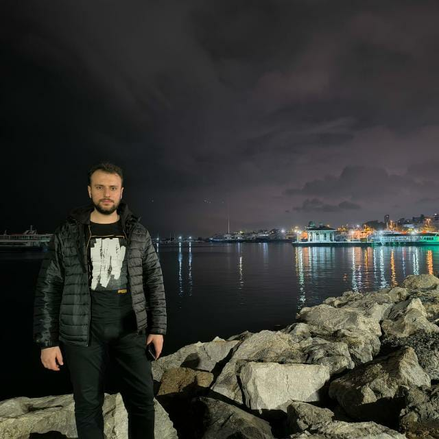

Abdussamet Duru
Hakkımda
2001 yılında Elazığ'da doğdum. Lise öğrenimimi Elazığ'da tamamladıktan sonra hemşirelik programında iki yıl okudum. Daha sonra bu bölümü bırakarak bilgisayar mühendisliğine geçiş yaptım. Şu anda Karabük Üniversitesi bilgisayar mühendisliği 2. sınıf öğrencisiyim. Üniversitede destek personeli olarak çalışmaktayım. Siber güvenlik ve yapay zeka alanlarına ilgi duyuyor, yenilikleri takip ederek kendimi geliştirmeye devam ediyorum.
Eğitim
- Karabük Üniversitesi, Bilgisayar Mühendisliği, 2. sınıf
- Anadolu Üniversitesi, Sivil Hava Ulaştırma İşletmeciliği, 2. sınıf
- Atatürk Üniversitesi, Büro Yönetimi ve Yönetici Asistanlığı, Mezun
Deneyim
Üniversitede destek personeli (2022 - )
Beceriler
- C Programlama Dili
- HTML & CSS
- PHP
Sertifikalar
- C Dili Eğitimi
- Diksiyon Eğitimi
- İngilizce Eğitimi
- Gitar Eğitimi
Hobiler
Gitar çalmak ve yürüyüş yapmak.